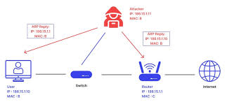

ARP Spoofing (ARP Zehirleme), kötü niyetli bir saldırganın yanlış MAC adreslerini ARP tablosuna ekleterek ağ trafiğini yönlendirmesi veya dinlemesi için yapılan bir siber saldırıdır.
Ağdaki cihazları, saldırganın MAC adresini yanlışlıkla ağ geçidi (router) veya başka bir cihaz olarak kaydetmeye zorlar.
Hedef cihazlar, saldırganın cihazını gerçek hedef gibi görerek ona veri göndermeye başlar.
Man-in-the-Middle (MITM) saldırısı yapılarak veri dinlenebilir, değiştirebilir veya kötü amaçlı işlemler gerçekleştirilebilir.
Trafik dinleme (Sniffing) → Kullanıcı adı, şifre gibi hassas bilgileri çalma.
Oturum ele geçirme (Session Hijacking) → Kullanıcıların oturumlarını çalma.
Hizmet reddi saldırıları (DoS Attack) → Ağı kullanılamaz hale getirme.
Veri manipülasyonu → Gönderilen verileri değiştirme.
Statik ARP tabloları kullanın: Manuel olarak IP-MAC eşleşmeleri yapılandırılabilir.
ARP Denetim Araçları (ARP Watch, XArp) kullanın: Şüpheli ARP değişikliklerini tespit eder.
VPN kullanın: Şifreli trafik saldırıyı etkisiz hale getirir.
Port güvenliği etkinleştirin: Yönetilen switch’lerde belirli MAC adreslerini sabitleyin.
Dynamic ARP Inspection (DAI) kullanın: Cisco gibi gelişmiş ağ cihazları, sahte ARP paketlerini engelleyebilir.
Ana Sayfaya Dön